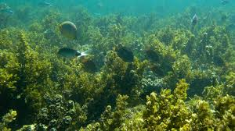
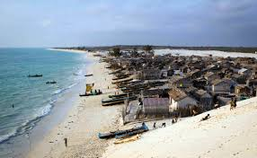
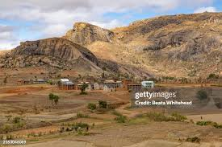
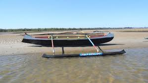
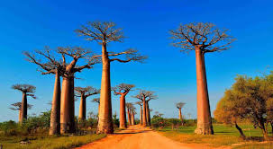
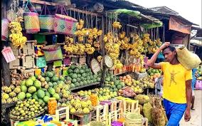
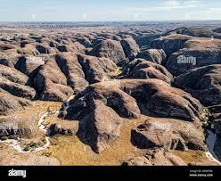

Province de Toliara
La province de Toliara, située dans le sud-ouest de Madagascar, est réputée pour son climat aride, ses plages paradisiaques et ses paysages spectaculaires. Elle comprend les régions de Menabe, Atsimo-Andrefana, Androy et Anosy. Toliara est également connue pour son artisanat, ses pirogues Vezo et la richesse de ses récifs coralliens.






